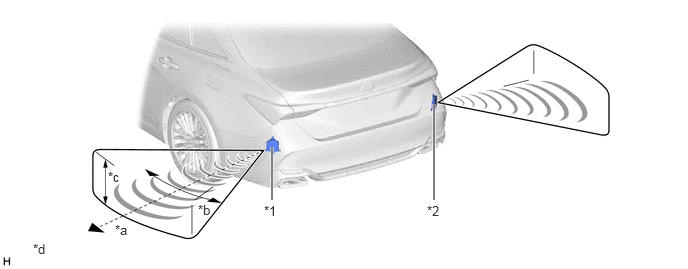

构造
盲区监视传感器包括毫米波雷达电路和信号处理电路。
毫米波雷达采用的频率在 24 GHz 波段。

| *1 | 左侧盲区监视传感器 | *2 | 右侧盲区监视传感器 |
| *a | 距离：约 70 m (230 ft.) | *b | 水平角：约 150° |
| *c | 垂直角：约 20° | *d | 所示插图仅为示例。 |
通过反射的毫米雷达波所提供的信息计算与物体的距离、物体方位和相对速度。
| 项目 | 计算方法 |
|---|---|
| 距离 | 根据从发射毫米雷达波到毫米波雷达电路接收反射的雷达波所用的时间长度来计算距离。距离约为 70 m (230 ft.)。 |
| 方位角 | 根据从接收的反射的毫米雷达波的角度计算。检测角度的水平范围约为 150°，垂直范围约为 20°。 |
| 相对速度 | 根据反射的毫米雷达波的频率的变化（多普勒效应*）计算。 |
*：多普勒效应使观察者感受到移动物体发射的无线电波，接近观察者时该无线电波频率变高，远离时频率变低。如果需要确认雷达波束轴，则使用 SST。有关详情，请参考修理手册。